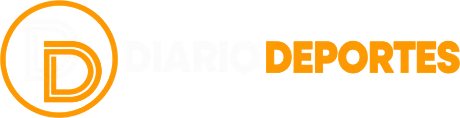
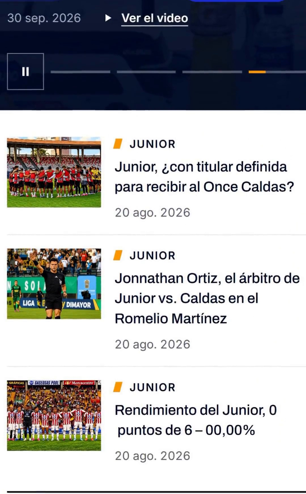

×

Así rediseñamos
Diario Deportes
El sitio de antes
0123456
problemas
Diez secciones al mismo nivel
Módulos repetidos en la portada
Banners sin etiqueta
Widgets con estilos ajenos
Sin una nota principal
Accesibilidad floja
Seis problemas.
Un sistema.

Antes
Después
Una nota principal.
El partido al frente.
Publicidad en su lugar.
Menú ordenado.
Cada detalle.
Una decisión.
Mega menú
Tira de partidos
Banda de YouTube
diseño
desarrollo
marca
Never the usual.
¿Tu sitio necesita orden?
outstudio.online